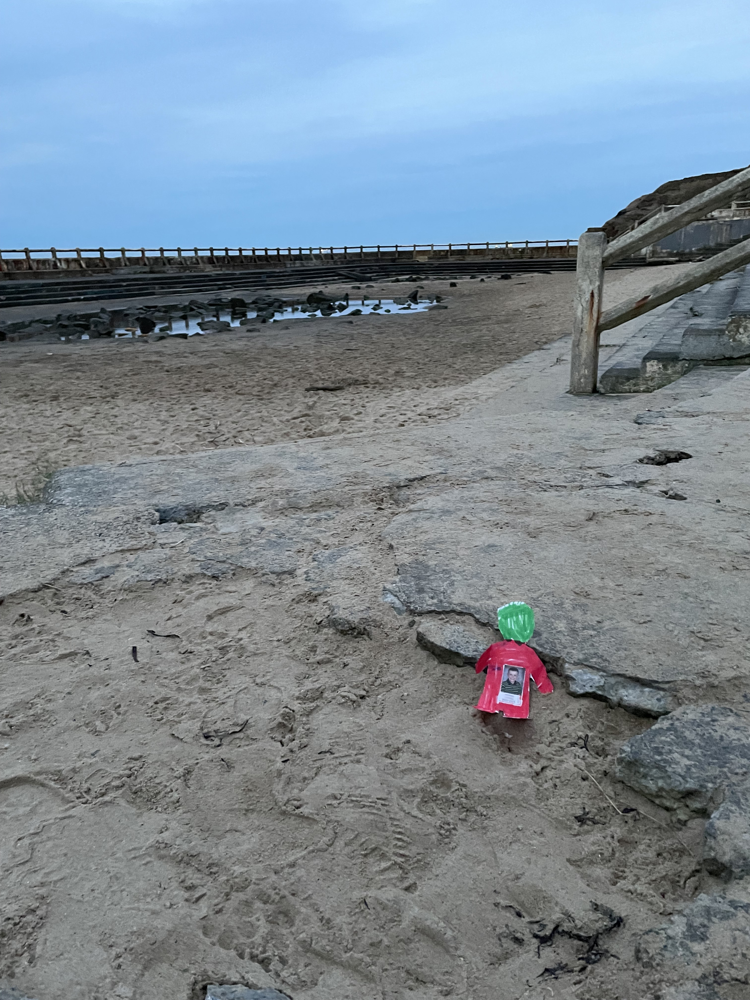
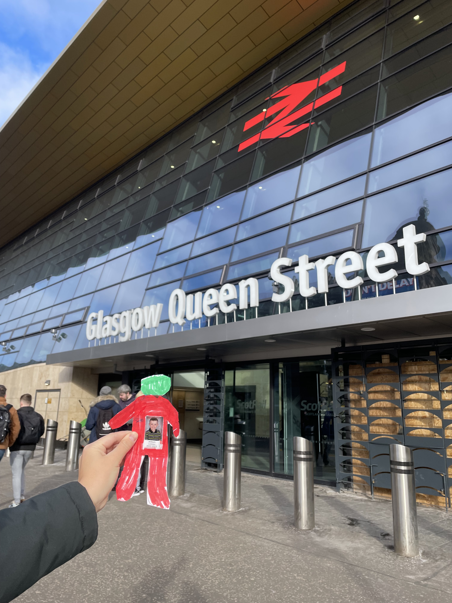
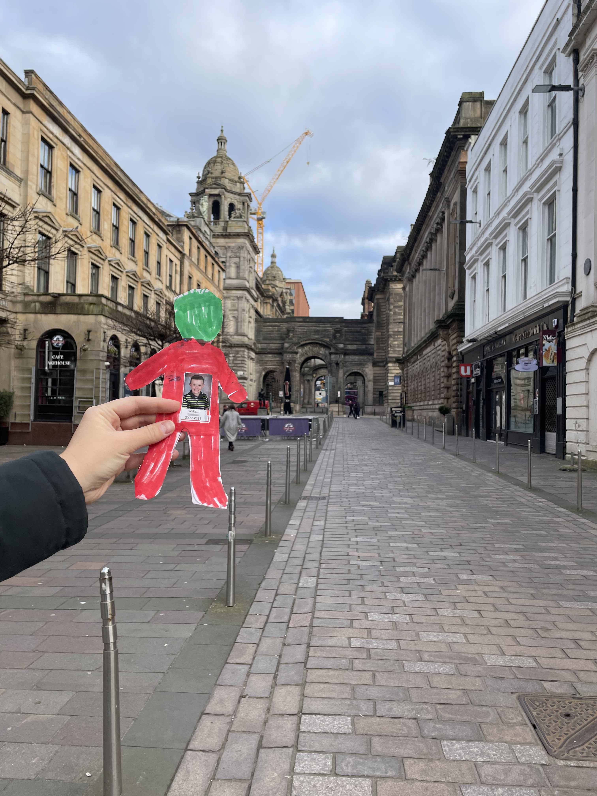
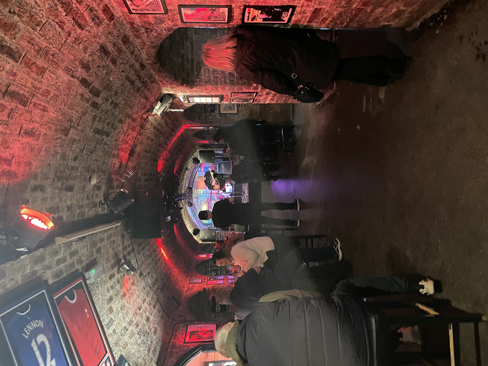

Newcastle upon Tyne!
After many hours on flight to the United Kingdom and through the Royal Mail, Flat Will finally arrived in Newcastle upon Tyne! I was so thrilled when Flat Will arrived at my house. I live in the house with the black door and the BIG door knocker! I live on the top floor and I have neighbors belong and on the sides of me. This is called a "terraced flag" where everyone lives side-by-side. My flat was built in the late 1800s! Can you believe it? Buildings are much older in the United Kingdom.
Newcastle upon Tyne is one of the biggest cities in the North East of England. England is one of four countries in the United Kingdom. The Angel of the North (picture to the left) is located just outside the city limits of Newcastle. The angel is supposed to be a symbol of the North region.
Newcastle is also known for its bridges! How many bridge do you see in these photos? Flat Will really liked seeing the bridges at night because they light them up with color lights.


It's been an interesting time to live in the United Kingdom. During the time that I've lived here, there have been three Prime Ministers. These people are like the President that we have in the United States. They've also had a queen and now a king! Amidst all of this, there has been some political unrest and the people that are living here aren't very happy. Many of them have actually gone on strike to try to win better wages and working conditions! I'm in one of the teachers unions and we have recently been on strike. The picture below shows us protesting in the center of Newcastle.
Tynemouth and the North Sea!
One of the best things about living in the United Kingdom is that it's an island! Well actually, it's actually made up of lots of islands! Can you find the United Kingdom in purple on the map on the left? What about the North Sea? Newcastle is very close to the North Sea coast. I like to take the metro to Tynemouth on the weekends. You can see my metro card on in the picture below the map. And here's what the metro stop looks like!
Flat Will really like checking out the lighthouse on the coast! Do you see the path to the lighthouse that Flat Will is standing on? Everything on the sides of the path fills up with water when the tide comes in. Sometimes you can't even walk to the lighthouse! There are also a bunch of seals that hang out by the lighthouse.

The North Sea is pretty far north, so the water is really cold! I wonder if it's as cold as Lake Superior in Minnesota? Have you been in Lake Superior? It's freezing and barely warms up in the summer.
Because the North Sea is chilly, there used to be a big swimming pool right on the water. You could easily and quickly walk from the pool to the sand and sea. The pool no longer has water in it but Flat Will liked hanging out there! There's talk that they will resotre the pool. I think that would be awesome! It's such a good idea.
Even though the North Sea is super cold, it's also one of the best places to surf in the United Kingdom! People come from all over the world to surf here. They just have to make sure they're tough enough to withstand the cold, rougher water! Can you see the little bodies in wetsuits in the photo below? The next picture shows one of the many beaches. It's called Cullercoats Beach!
Durham University
Flat Will got to go to work with me in Durham! I'm a professor at Durham University and I teach geography and cartography. I teach my students to make maps like the ones that are in Flat Will's travel blog. To get to work, I take a bus from my house to the train station station. I then take a train to work! Isn't that pretty awesome? The train only takes 12 minutes.
Flat Will really like the view of the river in Durham! In this picture (and the pictures below), you'll see both a castle and a cathedral. Can you believe that students actually get to live in the castle? Also, some scenes from Harry Potter were filled in the Durham Cathedral! Pretty cool, right? The castle is closest to you in the photo and the cathedral is taller and further in the distance. Check out the photo during the day and night below!


The photo below is the entrance to the castle! I've only been in the castle once for a dinner and it was pretty special

This photo shows the outside of Durham Cathedral! The Cathedral is open to the public and you're able to visit it. It's incredible inside.
Part of Harry Potter was filmed in the Durham Cathedral! I think it's one of the scenes where they are walking through the hallway and then they play quiditch in this grassy area.
Glasgow, Scotland!
I took the train to Glasgow, Scotland! Scotland is one of the four countries within the United Kingdom. Scotland is the most northern country and then there's England, Wales, and Northern Ireland.
Flat Will really like walking around the city! We went on a walking tour with a historian that told us all about the history of Scotland and it's most recent vote to try to leave the United Kingdom. The United Kingdom recently left the European Union and the Scottish people aren't very happy about it because they like the ease of travel and their economic links to Europe. We'll see if they vote to leave the United Kingdom in the next few years!
We checked out the University of Glasgow as well! Flat Will loved the old buildings. Maybe he will go to school here some day? What do you think?

Glasgow is famous for street artwork! They even have a monument of the Duke of Wellington, which is in front of their modern art museum. Do you notice the silly cone on top of the statue? As a sign of protest, the people of Glasgow (or maybe just a group of kids) kept putting an orange cone on the head of the statue. At one point, there were over 10 cones on top of the Duke's head. The police eventually gave up and now one cone always rests on top of the statue!
They also have a lot of artwork that's painted on the walls! I really liked these two murals: one of the man with the bird and the other one that shows a satellite in space. Which one do you like better?

Liverpool!
Flat Will and I then took a trip to Liverpool, England! This is a picture of the train station! I like the different train stations. They often are really old buildings with super interesting architexture! It took three hours to get there and I had to go on two different trains. I switched trains in Leeds. It's really fun to travel by train. You get to relax, look out the window, and eat snacks and drinks that they sell on the actual train. I wish we had this many trains back in the USA and Minnesota! Maybe someday...
Flat Will and I went to the Museum of Liverpool and learned all about the city's history! They have a really important history in the shipping industry but they are also known as a great place to film movies and shows! They also used to have a elevated train along the water that had great views!
Liverpool is a port city. It's known for the shipping industry because it's right along the Western coast of the United Kingdom. The Titantic is a very famous ship that sunk in the Atlantic Ocean. While the Titanic never came to Liverpool, the company that owned the ship was based in Liverpool and as a result, much of the crew working on the Titanic had close ties and family in Liverpool.


Because of the shipping industry, Liverpool is also an important site when we think of labor rights. Back in the day, the "dockers" who worked in the shipping industry led social movements and protests for better wages and job protections. The northern half of England is a more working class region of England compared to London and the southern cities. As such, there is a strong labor movement!

Do you recognize these four guys? Perhaps most famously, Liverpool is known as the birth place for the Beatles! You'll have to ask your grandparents about the Beatles. The picture on the left is a statue of the four musicians. The photo on the right is a picture of the famous music venue called the Cavern Club where they got their start!
